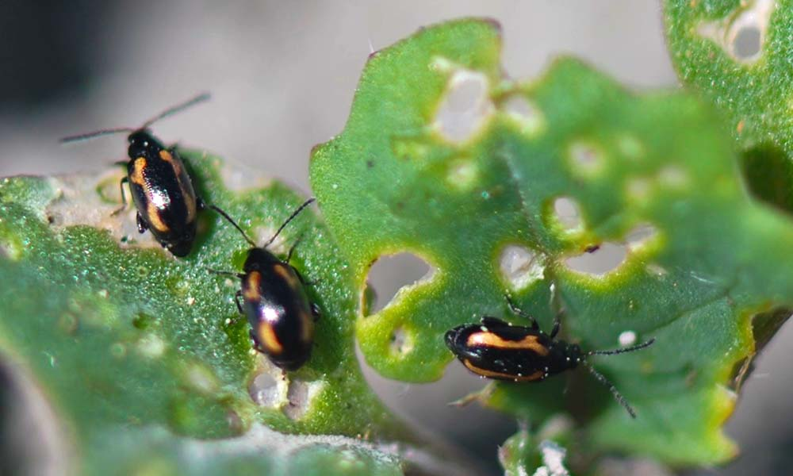

Dictionary
Summary

Watering: As with growing chili peppers in general, keep the soil moist but do not overwater them. For pepper plants in pots or containers, do not let the soil dry out completely. When peppers start to grow, cut back on your watering schedule a bit, but again, do not let the soil dry out.
Soil: Choose a good quality soil or potting mix for growing your pepper that allows for good drainage. Add compost or manure before planting if you’d like.
Fertilizer: A good 5-10-10 fertilizer is usually sufficient for peppers. Work it into the soil before transplanting, about 3 pounds per 100 square feet. We use a solution of fish emulsion and seaweed. Once the peppers begin to appear, fertilize one more time. You can also use manure or compost, which releases more slowly into the soil. Much, however, is affected by your soil, so you may want to consider a soil test if you are having issues.
Common Pest: Stay vigilant with your pepper plants. Keep a constant eye out for common diseases like bacterial spot, mildew or rotting. Pests like aphids or spiders are common as well, so watch out for them.
Sunlight: Chili peppers grow nicely in full sun. They will grow in partial shade, but they won’t be as productive. A sunny spot is best
Pot Type: Choose a pot or container that offers sufficient drainage. You don’t want to waterlog your plants, as that is the main cause of disease and other issues with growing. A 5-gallon pot that is 12 inches deep is good for most single plants. Choose a larger pot or container if you live in a warmer climate to accommodate growth.
Summary
Identification: Adults are small (1/10 inch long), shiny, dark brown or black beetles with large hind legs that allow them to jump when disturbed. Some species may have white or yellow stripes on their wing cases. Larvae are small, cream-colored worms (1/8 – 1/3 inch long). They live underground and feed on the roots and tubers of young plants as well as on germinating seeds.
How:
- Remove garden trash and plow or rototill under weeds to reduce overwintering sites.
- Floating row covers are extremely effective when placed on seedlings and left in place until plants are old enough to tolerate beetle damage.
- Place yellow sticky traps throughout garden rows every 15 to 30 feet to capture adults.
- Beneficial nematodes applied to the soil will destroy the larval stage, reducing root feeding and helping to prevent the next generation of adults from emerging.
- Apply organic Diatomaceous Earth for long-lasting protection. Made up of tiny fossilized aquatic organisms, that look like broken glass under the microscope, DE kills by scoring an insect’s outer layer as it crawls over the fine powder. Contains NO toxic poisons!
- Surround WP (kaolin clay) forms a protective barrier film, which acts as a broad spectrum crop protectant for preventing damage from insect pests.
- BotaniGard ES is a highly effective biological insecticide containing Beauveria bassiana, an entomopathogenic fungus that attacks a long-list of troublesome crop pests – even resistant strains! Weekly applications can prevent insect population explosions and provide protection equal to or better than conventional chemical pesticides.
- 70% Neem Oil is approved for organic use and can be sprayed on vegetables, fruit trees and flowers to kill eggs, larvae and adult insects. Mix 1 oz/ gallon of water and spray all leaf surfaces (including the undersides of leaves) until completely wet.
- Least-toxic botanical insecticides should be used as a last resort. Derived from plants which have insecticidal properties, these natural pesticides have fewer harmful side effects than synthetic chemicals and break down more quickly in the environment.
Tip: Trap crops, such as mustard and radish, can be planted near garden areas to draw pests away.